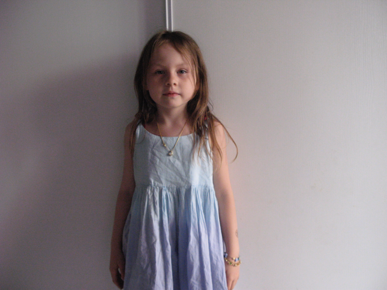
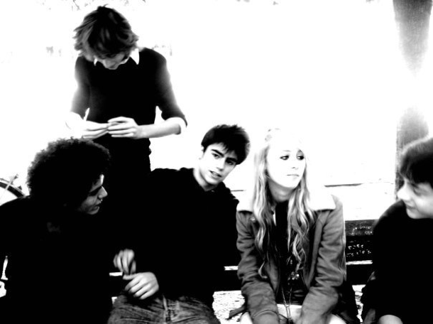
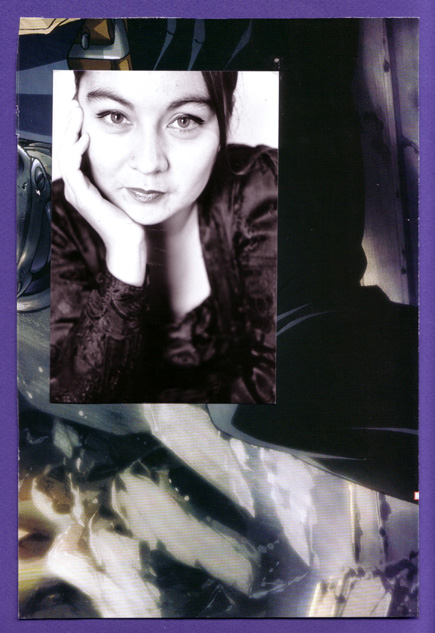
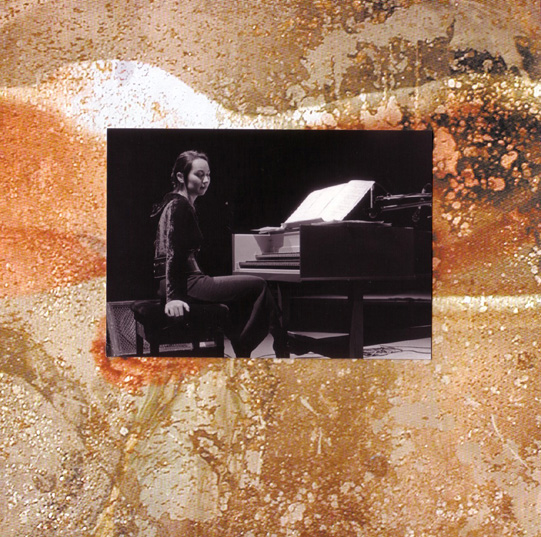

Tout comme vous, je vis des expériences, des situations, des relations, au sein d'un monde en perpétuel mouvement
Il me semble que nous avons tous la possibilité d'inventer, de créer un contexte favorable à notre épanouissement. Encore faut-il le vouloir, ne pas avoir perdu cette liberté de penser puis d'acter, dans ce monde où il y a toujours quelqu'un pour vous dire ce que vous avez à faire.
La première pierre à l'édifice serait alors la réponse à la question suivante :
Qu'est-ce que je veux ? Ceci quel que soit mon âge

La deuxième serait une mise en acte quoi qu'en pensent ceux qui croient mieux savoir car la vie est faite d'expériences et il serait fort dommage de s'en priver.

En ce qui me concerne, j'ai débuté très tôt la musique et suis devenue musicienne de profession. Au cours de mes études, j'ai commencé à pratiquer la méditation quotidiennement et la sophrologie sans savoir que cela en était. Ces pratiques, ces expériences que je vivais, ont profondément structuré ma vie de musicienne. Naturellement, j'ai décidé un jour, de me former afin de pouvoir accompagner de manière professionnelle toute personne désireuse ou nécessiteuse.

